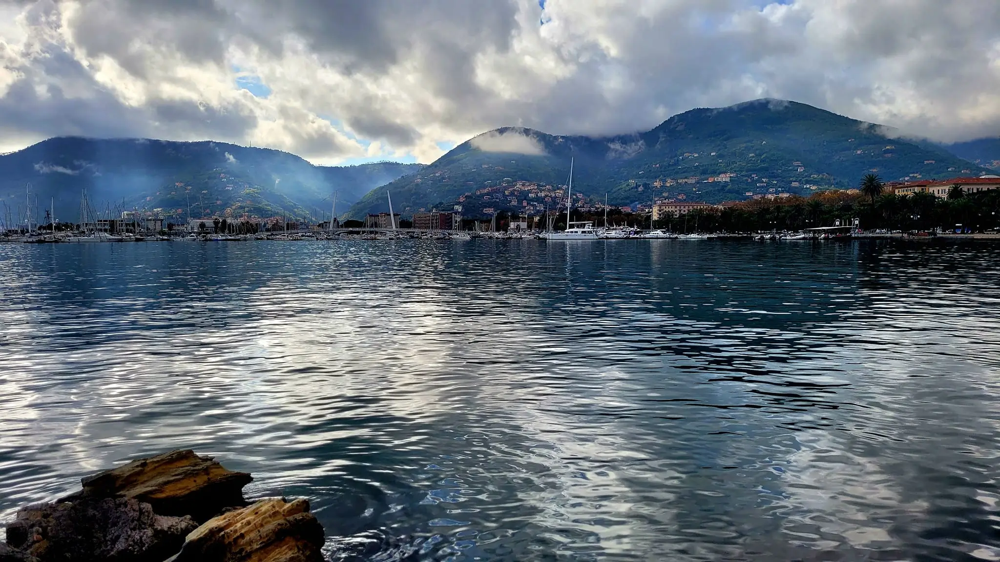
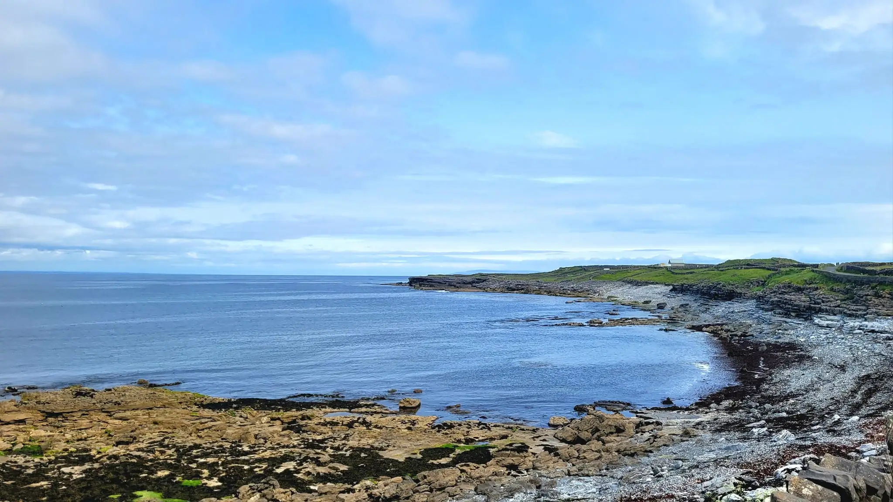

Europe is a continent where history, culture, and modern life blend seamlessly. From the romantic streets of Paris to the ancient ruins of Rome and the artistic energy of Barcelona, each city, each country offers something unique.
Traveling through Europe can be as budget-friendly or as indulgent as you like. With affordable public transport, budget airlines, and countless free attractions, you don’t need to spend a fortune to explore its charm.
Ideas for what to see and do in Europe

Europe is a huge diverse continent with an amazing history, architecture, traditions, diverse cultures which blend seemingly and coexist one next to another. Europe is place which offers never ending posibilities to what you can do or see from anything from watching Nortern lights and exploring viking heritate in Scandinavia, visiting mediaval castles and towns, experience smoke filled cafes in Netherlands, relaxing on countless beaches, hiking beautiful mountains to taking a part in Octoberfest or Tomatina, which will make you always always find something new and keep coming back.
Get lost in the streets of Prague
They call Prague the city of a thousand spires — and it truly lives up to the name. Split by the winding Vltava River, this historic capital blends Gothic, Romanesque, Baroque, and Renaissance styles into one breathtaking cityscape. For me, Prague feels magical every time I return. I love taking the metro to Old Town Square watch the iconic Astronomical Clock, then wandering through cobbled streets on my way up to Strahov Monastery. The climb is long and uphill, but the reward — a hearty meal and a cold Czech beer — is worth every step. Prague have it all, beautiful parks, historic landmarks, green leafy areas, huge number or nightclubs, restaurants and bars where you can experience the Czech culture.
It is not the cheapest to visit but if you are savvy and visit out of tourist and holiday seasons even though Christmas markets in Old Town Square are worth the extra money, and if you go just further away to the tourist circle you not only save money, but will have even more authentic experience
Relax on the Greek Islands
Santorini, Mykonos, Crete — each Greek island has its own personality. Swim in crystal-clear waters, explore whitewashed villages, and savor fresh seafood by the sea. Whether you’re after vibrant nightlife or quiet hidden beaches, Greece has an island for every kind of traveler.
Sample wine around the Europe
Europe is home to some of the world’s most famous wine regions. Sip port in Porto, tour the vineyards of France’s Loire Valley, discover Spain’s bold Rioja reds, or spend a day in a rustic wine cellar in Moravia in the Czech Republic. Whether you’re a casual taster or a wine enthusiast, Europe will delight your palate at every stop.
Go outdoors
Europe’s landscapes are as diverse as its cultures. Chase the Northern Lights and soak in thermal lagoons in Iceland, climb Ben Nevis or explore Snowdonia in the UK, hop between the Channel Islands, or ski down the slopes of the Alps. If you love the outdoors, Europe offers endless opportunities for adventure in every season.
How to get around

The beauty of traveling in Europe is how easy it is to get around. Once you are in Europe, you will find the most smooth way to get around. The continent has a fantastic transport network — from international flights, trains, buses, and ferries to local options like trams, underground systems, and city buses. It’s highly unlikely you’ll ever be stranded in a European city or even a mid-sized town. Public transport is safe, convenient, and comfortable, and thanks to the EU’s open borders, moving from one country to another is simple. Gone are the days of waiting in long queues just to cross a border..
Travelling by public transport
Travelling by bus is one of the most affordable and convenient ways to explore Europe. Almost every city or town has its own network of buses, trams, underground systems, or even trolleys, which are easy to navigate and usually cost between €1 and €3 per ride. Long-distance buses such as the most popular Flixbus or Megabus are generally comfortable, reliable, and budget-friendly with amenities such as Wi-fi and toilets. From my experience in most cases, bus terminals are located close to the city center, which is especially helpful when you’re dragging a suitcase or backpack through an unfamiliar place. The last thing you want is a complicated journey just to reach your accommodation.
Travelling by train
Trains are one of the most comfortable and scenic ways to explore Europe. Prices vary depending on the country and whether you choose high-speed or regional services, but rail travel is usually reliable and stress-free. Each country has its own train operators, such as Trenitalia in Italy, Renfe in Spain, and Deutsche Bahn in Germany. On top of that, there are fantastic international options like Eurail and Interrail, which offer passes that can save you a lot of money if you’re visiting multiple destinations. Non-EU residents can buy a Eurail Pass, while EU residents can opt for an Interrail Pass.
You can learn more about train companies and routes at Trainline, a useful platform for planning and booking rail travel across Europe.
When to travel
When to travel in Europe really depends on your preferences. Do you enjoy the warmth of the sun, or do you prefer cooler weather and quieter streets? Your budget also plays a big role — if you want to save money, it’s best to avoid peak seasons such as mid-summer, Christmas, Easter, and school holidays, when prices are at their highest and popular attractions are crowded.
Europe can be visited year-round, but the ideal season depends on your destination. If you’re planning a trip to Scandinavia, summer is the best choice — temperatures are comfortable, daylight hours are long, and the cities are full of life. Keep in mind, though, that this is also the busiest season. For Southern Europe, spring (April–May) and autumn (September–October) are perfect: the weather is pleasant, prices are lower, and crowds are smaller. Winter in much of Europe is cold and wet, but if you love the festive season, it’s a magical time to visit. Cities like Frankfurt, home to Germany’s oldest and largest Christmas market, and Prague, with its famous Old Town Square and Wenceslas Square markets, make for unforgettable winter getaways.
European Cities Worth to Visit
Europe is full of cities that each have their own character and story to tell. Some are famous for their history, others for their atmosphere, and some simply for the way they make you feel when you walk their streets. Whether big or small, these cities all have something special that makes them worth the trip. Here are a few ideas of my favourite cities worth to visit to get you inspired.
Porto Venere
Location: Italy
Region: Liguria
How to get there:
By car: 1hr 10 mins from Genoa 50 mins from Pisa
By public transport: - Bus or train from Genoa to La Spezia the local bus from La Spezia 11/P to Porto Venere. Bus is going every hour an ticket can be bought in any tobacco (Tabaccheria) shop
By boat: Boats running from La Spezia, Levante and Cinque Terre
by flight: Nearest airport Pisa (PSA)
What to see in Porto Venere
Porto Venere is a beautiful fishing town, often overlooked by visitors heading to more famous Cinque Terre, however this little gem is worth to visit either for few days or as I did for a day trip in quiet time of November when hardly any tourist were present so I could fully immerse myself in exploring all the beauty Port Venere has on offer.
Church of Saint Peter
The churhc of Saint Peter is a spectacular landmark of Porto Venere, sitting on top of rock in Ligurian Sea. Due to its positon the church was a in the past a strategical point of defence, now used for special events such as weddings and other ceremonies.
Doria Castle
The medieval fortress is located on the top of the hill of Porto Venere offering beautiful, relaxing surroundings and stunning views to enjoy after a little climb up. The cylindrical tower of Doria Castle was one used as a watch tower against pirates. The fortress was used in the WW2 by the German forces as an anti-aircraft station
San Lorenzo church
San Lorenzo Church is dedicated to the Porto Venere's saint San Lorenzo, and known as a sanctuary of the Madonna Bianca. It was built around 1098 by Genoese in Romanesque style in a place of ancient temple of Jupiter.
Other things to do in Porto Venere
Explore the streets of Porto Venere Porto Venere feels like stepping into another world. Its narrow streets and colorful houses create a beautiful contrast that instantly catches the eye. Wandering past small shops filled with local art and crafts, strolling down to the peaceful marina lined with bright boats, and enjoying seafood made from fresh local ingredients in tiny eateries all add up to an atmosphere you won’t forget.
Take a boat trip to the nearby islands of Palmaria and Tino for a calm escape and stunning sea views. On the boat you will see beautiful vies of the cliffs and seaside scenery.
Hike through the famous Cinque Terre towns. These five villages on the Italian coast, each with their own charm and character, are easy to reach by trail or train, and make for a day full of unforgettable scenery. the paths are usually well taken care of and are of varied difficulties which make them suitable for most hikers.
Granada
Location: Spain
Region: Andalucia
How to get there:
By car: Granada is connected to major cities such as Malaga, Sevilla
By public transport: Buses - 1.5hrs - 2hrs from Malaga, trains - 1.5hrs
by flight: Granada Airport (GRX) (limited amount of airlines) Malaga Airport (AGP)
What to see and do in Granada
Granada is beautiful Moorish city located in sunny Andalucia. It is great place to visit for someone who loves long walks, hikes, music and unique neighborhoods to wander around. Granada, nestled at the foot of Spain’s Sierra Nevada mountains, is a city where history, culture, and beauty come together. Famous for the Alhambra’s Moorish palaces, charming Albaicín quarter, and lively tapas scene, Granada offers a mix of old-world atmosphere and vibrant modern life. With stunning views and a rich heritage, it’s a destination which once visited, will never be forgotten.
Alhambra
Alhambra - Red castle is one of the most visited landmarks in Spain built in 13th century, featuring beautiful gardens view points and key structures such as Nasrid Palaces, Alcazaba fortress and the Palace of Charles V. it is symbol of cultural blending happening during islamic Golden Age. Alhambra is a place worth to visit and way how to spend a whole day in Granada due its enourmous size.
Generalife Gardens
The Generalife Gardens in Granada are a peaceful escape, once the summer retreat of Moorish kings. With shaded paths, flowing fountains, and vibrant flowers, they offer a calm contrast to the grand Alhambra. From the terraces, you’ll enjoy unforgettable views of the city and the Sierra Nevada mountains.
Granada Cathedral
Granada Cathedral is a masterpiece of Spanish Renaissance built by Queen Isabella in the heart of the city on the site where the main mosque. There is an option to visit sactristy and the cathedral museum with many items on display and admire number of sculptures and paintings
Other things to do
Watch Flamenco in Sacramonte Roma quarter, bautiful quarter with white washed cave homes, open air terraces and rythms of Flamenco in every corner. Hike the trails for the most amazing view and captures of the sunset.
Go for shopping spree to Alcaiceria - the ancient arab market located next to the Granada Cathedral. Alcaiceria is a maze of narrow cobbled streets and shops selling souvenirs and Arab handicrafts.
Get tapas In Granada every restaurant and bar gives free tapas with every beer which is great way how to eat well and cheap. Some places will give one type of tapas and others will give with every drink different ones. The tapas are quite decent sizes so when you have few drinks you will leave with full belly of tasty tiny meals which not going to drain your wallet.
Visit Abacein The most popular historic quarter with Moorish style courtyards and plazas.
Dublin
-dublin.jpg)
Location: Ireland
How to get there from the UK:
By boat: Ferry from Liverpool UK
By flight: To Dublin airport, to Cork airport, to Belfast airport
By public transport: From Dublin airport 45mins by bus 14 or quicker airport coach, from Belfast 2hrs 25mins, from Cork 2hrs 50mins
By train: From Belfast 2hrs.9mins, From Cork 2hrs 31mins
What to see and do in Dublin
Dublin, the capital of Ireland, is a city where old and new blend effortlessly. From cobbled streets lined with centuries-old buildings to the vibrant energy of modern cafés, pubs, and music venues, Dublin offers a unique atmosphere that feels both historic and alive. Wander through Trinity College to see the famous Book of Kells, stroll across the River Liffey on its many bridges, walk around Pheonix Park, visit Dublin castle, Christ Church cathedral or simply soak up the Irish culture by listening to traditional Irish music spilling from every corner. Whether you come for the history, the culture, or the warm welcome of its people, Dublin is a city that is worth to visit over and over again.
-temple-bar.jpg)
Temple Bar
A visit to Dublin wouldn’t be complete without experiencing Temple Bar. This vibrant neighborhood, buzzing with pubs, cafés, and street performers, offers a true taste of the city’s spirit. At its heart stands the iconic Temple Bar Pub, dating back to 1840, famous for its daily live music and Ireland’s largest whiskey collection.
Malahide Castle and Gardens
Just 25 minutes from Dublin city center, the majestic Malahide Castle is a gem with over 800 years of history. Easily reached by buses 32 or 42, or even directly from Dublin Airport, the castle takes you on a journey through centuries of Irish heritage. After exploring its halls, step outside into the botanic gardens, where colorful flowerbeds, a tranquil pond, and Ireland’s only butterfly house await. Whether you stay for a half-day or make it a full day out, Malahide Castle and Gardens offers the perfect escape from Dublin’s busy streets.
-Copy.webp)
The Christ Church Cathedral
The Christ Church Cathedral, founded in the 11th century by Viking King Sitric Silkenbeard, is one of Dublin’s most iconic landmarks. It’s home to Ireland’s largest crypt and the world’s highest number of bells, making it a fascinating stop for history lovers. Located beside Dublinia, an interactive museum exploring the city’s Viking past, and just a short walk from Dublin Castle and St. Patrick’s Cathedral, it’s the perfect place to begin your journey into Dublin’s rich history
Other things to see and do in Dublin
Guinness Store House A visit to Guinness Store House is a must after Temple Bar. This seven-story experience takes you through the journey of Ireland’s most iconic stout — from selecting the finest barley and roasting it to perfection, to learning about the brewing process in interactive rooms. The highlight comes at the top: enjoying a freshly poured pint in the Gravity Bar, where 360-degree views of Dublin stretch out before you.
Visit EPIC The Irish Emigration Museum and learn about the hard life and the faith of those who left Ireland in hope for better life around the world and find out what happened to them after setting their new life in far away land on North America.
Tour the Jeanie Johnston ship and hear the emotional stories of Irish people who braved 47 harrowing days at sea during the Great Famine in search of a better life. Unlike most “coffin ships,” where countless lives were lost, the Jeanie Johnston became a symbol of hope — no one ever died on board, and even a baby boy was born at sea. Her legacy endured when, after nine stormy days taking on water, all passengers were miraculously saved by the Dutch vessel Sofie Elisabeth.
Visit Rock'n'Roll Museum and experience the behind the scene access to all areas. Learn about history of Rock'n' Roll music and the artists and see the recording studios to get inspired for more music on the go while in Dublin.
Places where nature speaks
Travel doesn't need to be always just about wandering busy streets or catching famous landmarks. Sometimes when you are tired of busy city hopping all what you need is to relax, connect with the nature and enjoy fresh air and beautiful sceneries around you. Europe is blessed with breathtaking landscapes — from snow-capped peaks and wild coastlines to deep forests and rolling valleys. These are the places where you can slow down, breathe deeply, and let the stillness remind you why you set out to travel in the first place. Here are some ideas for an inspiration.
Aran Islands
Location: Ireland
Region: Galway
How to get there:
By Ferry: Inis Mor via Galway City, Doolin (35mins), Rossaveel (40mins)
Inis Oirr via Doolin (15mins), Rossaveel (35 mins)
Inis Meain via Doolin (20 mins), Rossaveel (50 mins)
by flight: via Connemara Airport (10mins)
The Aran Islands, located off Ireland’s west coast, are made up of three unique islands:Inis Mór, the largest and most famous, attracts nature lovers with its ancient stone forts such as the Black Fort, Dún Eochla, and Dún Eoghanachta. Visitors can explore towering cliffs, spot seals in their natural habitat, and wander among the remains of early churches like the Seven Churches and small stone chapels. Natural gems such as Kilmurvey Beach add to the island’s timeless charm, making Inis Mór a perfect escape into Ireland’s wild beauty.
Inis Meáin, the middle island, offers a quieter but equally stunning experience. With fewer attractions, it is often overlooked, yet this is what makes it so special. Time seems to stand still here, giving visitors a glimpse of Ireland as it once was — simple, authentic, and deeply connected to its traditions and landscapes.
Inis Oirr is the smallest out of three and due to its size, it is an ideal place for a day trip where you can easily cycle or walk around the landmarks such as Teampall Caomhan, Cil Gnobnait, O'Brian's Castle and others while enjoying the stunning views from the little island.
Coimbra Botanical Garden (Jardine Botanico)
smaller.JPG)
Location: Portugal
Region: Coimbra
How to get there:
By train: From Campanha train station in Porto 1hr 9 mins
By Bus: Flixbus from Porto to Coimbra 1hr 20 mins
By car: 1hr 14 mins (limited parking and tolls on the way)
by flight: Porto Airport
Coimbra Botanical Garden at the University of Coimbra, founded in 1772 for the study of natural history, is one of the best places to admire plants from all over the world. The garden is adorned with statues and divided into two main levels: the classical symmetrical garden, with its terraces, alleys, perfectly made shrubs, and the arboretum, where a shade house shelters diverse plant species. A wall cascade and stream flow through the site, adding to its charm. Within the arboretum, you’ll also find a serene bamboo forest, the Chapel of St. Benedict and what not to be missed the water features and lake for the perfect photo taking. Together, these features make the Botanical Garden a perfect escape for nature lovers seeking tranquility in the heart of Coimbra.
Jerbourg
Location: The Channel Islands
Region: Jerbourg Peninsula Guernsey
How to get there:
By sea: Take a ferry to Guernsey or sail
By flight: Gurnsey airport from UK and European cities